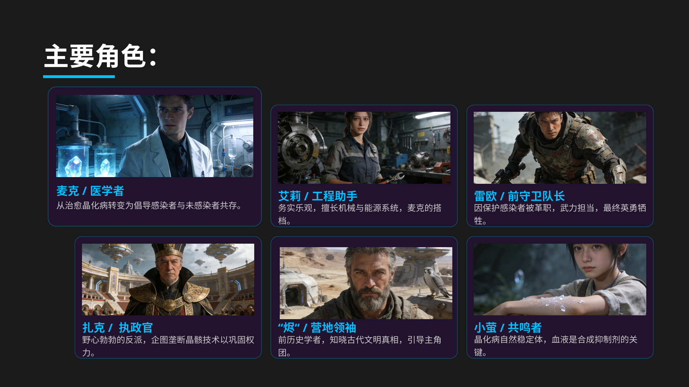
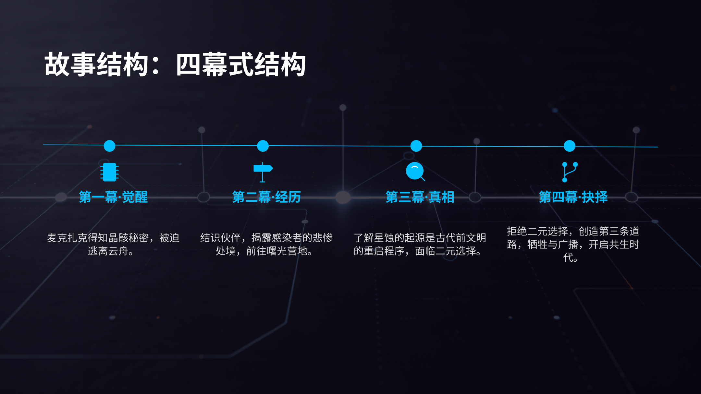
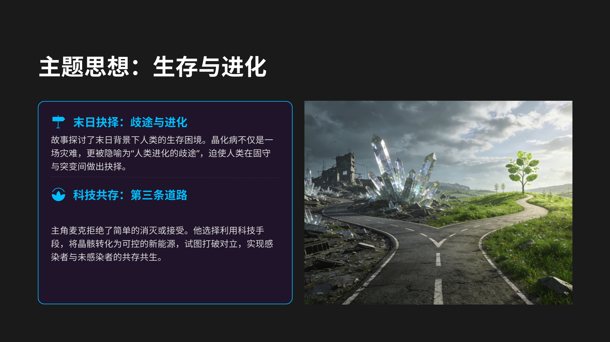

Archive 03 // SCI-FI EPIC STORYTELLING
NUCLEUS DUST
REALM
另一個獨立 sci-fi universe。整體視覺同世界觀已經好完整，所以網站上最適合做成獨立 IP 分頁，而唔係塞入 Ferropolis 裡面。
星蚀灾变晶化病第三条道路
故事背景
末日、晶体、感染、秩序残余。
公元 5042 年，世界被周期性灾变「星蚀」笼罩，天空降下紫黑色晶体碎片，引发地质崩塌与生态畸变。由此带来的「晶化病」会让患者体表长出发光晶体，逐渐石化，最终死亡并造成二次感染。
灾变核心星蚀碎片导致世界秩序崩坏。
主要威胁晶化病、晶骸、Crystal Beasts。
世界结构浮空城 vs 地表感染者据点。
核心设定
這部分適合做成 Hypergryph 風格世界觀名詞頁面。
Crystallization Disease
由星蚀碎片引发的致命疾病，患者逐渐石化，最终死亡并引发二次感染，是末日世界的直接原因。
Crystal Core
部分患者体内会形成高能量晶体核心，使他们获得特殊能力，也让权力争夺变得更加残酷。
Crystal Beasts
受灾变影响而突变的危险怪物，强化了地表废墟的生存压力与世界危险感。
故事结构
四幕式结构非常适合直接转成网站 timeline。
第一幕
觉醒麦克得知晶骸秘密，被迫逃离云舟。
第二幕
经历结识伙伴，揭露感染者处境，前往曙光营地。
第三幕
真相发现星蚀起源与古代文明重启程序相关，被迫面对二元选择。
第四幕
抉择拒绝简单二选一，创造第三条道路，开启共生时代。
主题思想
這頁可以直接扛住你網站裡面的「世界觀深度」定位。
生存与进化
晶化病不只是灾难，更像人类进化歧途的隐喻，迫使角色选择固守、突变或超越对立。
人性与权力
反派扎克把感染者当成活体电池，展示绝对权力如何异化人性；主角团则守住善良与牺牲。
第三条道路
主角拒绝简单消灭或接受感染，而是尝试将晶骸转化为可控新能源，实现共存。
视觉叙事
原文件裡面嘅色彩分析，本身就超適合做網站風格基礎。



